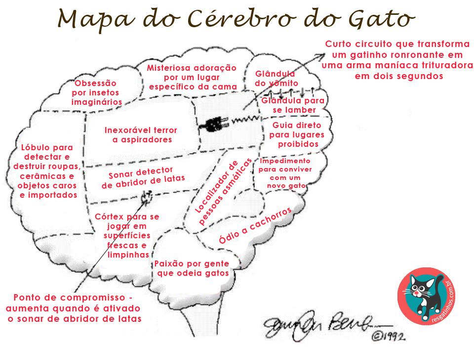

-
Os gatos dormem cerca de 70% de suas vidas, o que pode durar até 16
horas por dia.
-
Os cães podem fingir que estão doentes para obter mais atenção de seus
donos.
-
O cérebro de um gato é 90% semelhante ao cérebro humano.

-
Os cães têm noção do tempo e podem se acostumar com seus horários,
assim,
eles sabem os horários das comidas, passeios e até mesmo o horário de
tomar remédios.

-
Os cães têm um olfato tão poderoso que podem ser treinados para
detectar certas doenças,
como o câncer em pacientes humanos, ao cheirar os resíduos metabólicos
liberados pelas células
e detectar hipoglicemias.

-
Ter um gato pode reduzir em um terço o risco de derrame cerebral e
ataque cardíaco de uma pessoa.
-
Uma pesquisa afirma que a chance de um homem obter o número de
telefone de uma garota mais do que
triplica quando está com um cachorro.
-
Fazer carinho em um filhote pode ajudar a reduzir sua pressão
arterial.
-
Estudos afirmam que os cães podem ficar com ciúmes quando seus
tutores
quando demonstram carinho por outros animais.
-
Sabe-se que alguns cães param e cheiram certas plantas, embora nunca
devam
ingeri-las porque o cheiro os lembra de carne.